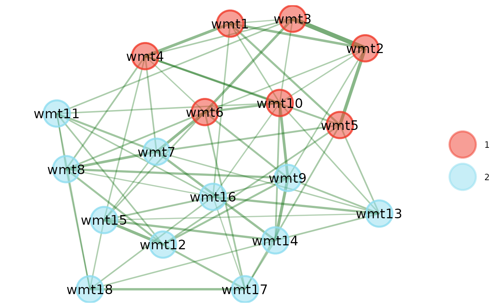
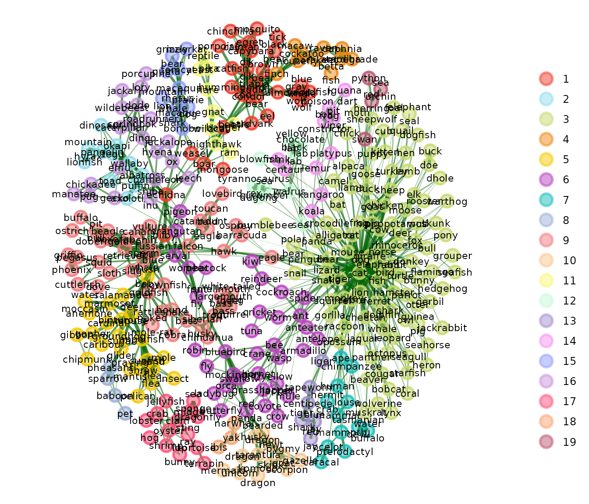

Using External Networks (and external packages)
Source:vignettes/modular-approach.Rmd
modular-approach.RmdAlthough {EGAnet} features many common methods used in the network psychometric literature, it does not include all possible options. Sometimes you might switch between {EGAnet} and other packages.
Alternative Networks
There are many different packages available to estimate psychometric
networks. One common package is {bootnet}.
bootnet::estimateNetwork offers many different methods to
estimate networks. The "ggmModSelect" approach will be used
as an example.
# Load packages
library(EGAnet); library(bootnet)
# Load data
data <- wmt2[,7:24]
# Estimate network
stepwise_result <- estimateNetwork(
data = data, default = "ggmModSelect", stepwise = TRUE
)Once a network is estimated, then a modular approach to estimating
the EGA workflow can be used. This workflow is the same as
what’s used internally in the EGA function. If the network
is coming from an {igraph} must be
converted using the igraph2matrix function (e.g.,
ega_network <- igraph2matrix(igraph_network)). Any
network that is a matrix or data frame object can be used in {EGAnet}
functions like the output from estimateNetwork.
Check for Unidimensionality
# Perform unidimensionality check
unidimensional_membership <- community.unidimensional(data)
# Print
unidimensional_membershipAlgorithm: Louvain
Number of communities: 2
wmt1 wmt2 wmt3 wmt4 wmt5 wmt6 wmt7 wmt8 wmt9 wmt10 wmt11 wmt12 wmt13
1 1 1 1 1 2 2 2 2 1 2 2 2
wmt14 wmt15 wmt16 wmt17 wmt18
2 2 2 2 2 The standard unidimensional check uses the Louvain Louvain algorithm on the zero-order correlation matrix (Christensen, 2023). The output will include the memberships regardless of whether the data are detected as unidimensional. In this output, the number of communities is 2 and therefore not unidimensional. If the number of communities was 1, then there is no need to proceed with the multidimensional estimation.
Estimate Multidimensionality
# Estimate multidimensionality
multidimensional_membership <- community.detection(
stepwise_result$graph, algorithm = "walktrap"
)
# Print
multidimensional_membershipAlgorithm: Walktrap
Number of communities: 2
wmt1 wmt2 wmt3 wmt4 wmt5 wmt6 wmt7 wmt8 wmt9 wmt10 wmt11 wmt12 wmt13
1 1 1 1 1 1 2 2 2 1 2 2 2
wmt14 wmt15 wmt16 wmt17 wmt18
2 2 2 2 2 For the multidimensional estimation, the estimated network should be
used as the input. The algorithm can be set using a number of different
algorithms (see ?community.detection) but the default is to
use the Walktrap
algorithm. From this output, Walktrap estimates 2 communities.
Obtain Final Memberships
A shortcut to obtain the final memberships as is used in
EGA is provided below:
wc <- EGAnet:::swiftelse(
# Check for whether unidimensional membership should be used
EGAnet:::unique_length(unidimensional_membership) == 1,
unidimensional_membership, multidimensional_membership
# Otherwise, use multidimensional membership
)Plot
In order to plot using {EGAnet}, the network and memberships need to
be set up as an EGA class object:
# Set up EGA object
ega_object <- list(
network = stepwise_result$graph,
wc = wc
)
# Set `EGA` class
class(ega_object) <- "EGA"
# Plot
plot(ega_object)
Modularity
Modularity can also be computed using the estimated network and appropriate memberships.
modularity(stepwise_result$graph, wc)[1] 0.204308Alternative Similarity Measures
By default, {EGAnet} uses the auto.correlate function to
compute appropriate correlations for each set of pairwise variables.
Other measures might need to be used in {EGAnet} functions.
Cosine Similarity
A common example is from natural language processing and cognitive science where cosine similarity is a common association measure between two terms. Below, we’ll show a semantic network example from the {SemNeT} package.
# Load packages
library(EGAnet); library(SemNeT)
# Compute cosine similarity
animals_cosine <- similarity(open.binary, method = "cosine")This data are from participants who performed a verbal fluency task
and generated animals for 1 minute. Each row represents a participant
and each column represents an animal. A 1 is an animal a
participant provided; a 0 is an animal a participant did
not provide.
The animals_cosine object is a symmetric matrix that
represents the cosine similarity between each animal. To use the cosine
similarity matrix (or any other alternative similarity matrix) in an
{EGAnet} function, n or the number of cases must be
set:
# Compute EGA
animals_ega <- EGA(
# Arguments for `EGA`
animals_cosine, n = nrow(open.binary), model = "TMFG",
# Arguments for `plot`
node.size = 4, label.size = 3, edge.size = 2
)